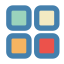

<ion-header>
  <ion-toolbar color="success">
    <ion-buttons slot="start">
      <ion-menu-button>
        
      </ion-menu-button>
      <!-- Esto abrirá el menú lateral -->
    </ion-buttons>

    <ion-title>RecolectApp</ion-title>
  </ion-toolbar>
</ion-header>

<ion-content>
  <!-- barra de busqueda para el usuario -->
  <div class="search-container">
    <ion-searchbar
      [(ngModel)]="searchKeyword"
      placeholder="Buscar reciclaje..."
      (ionInput)="onSearchInput($event)"
      (ionClear)="clearSearch()"
    ></ion-searchbar>
  </div>


  <div class="map" #map></div>


  <!-- Menú lateral (ion-menu) -->
  <ion-menu side="start" contentId="main-content">

    <ion-content>
      <ion-list>
        <ion-item>
          <ion-icon name="home"></ion-icon>
          <ion-label>Inicio</ion-label>
        </ion-item>
        <ion-item>
          <ion-icon name="settings"></ion-icon>
          <ion-label>Configuración</ion-label>
        </ion-item>
        <ion-item routerLink="/info-reciclaje">
          <ion-icon name="information-circle"></ion-icon>
          <ion-label>Información Materiales</ion-label>
        </ion-item>
      </ion-list>
    </ion-content>
  </ion-menu>

  <!-- Contenido principal -->
  <ion-router-outlet id="main-content"></ion-router-outlet>

  <ion-fab slot="fixed" vertical="top" horizontal="end" [edge]="true">
    <ion-fab-button class="bouncing" (click)="toggleAuthModal()">
      <ion-avatar>
        
      </ion-avatar>
    </ion-fab-button>
  </ion-fab>

  <!-- Botón flotante con logo en la parte inferior derecha -->
  <ion-fab slot="fixed" vertical="bottom" horizontal="end">
    <ion-fab-button class="triple-size-button">
      
    </ion-fab-button>
    <ion-fab-list side="top">
      <ion-fab-button style="--width: 40px; --height: 40px">
        <ion-icon name="document"></ion-icon>
      </ion-fab-button>
    </ion-fab-list>
    <ion-fab-list side="start">
      <ion-fab-button style="--width: 40px; --height: 40px">
        <ion-icon name="globe"></ion-icon>
      </ion-fab-button>
    </ion-fab-list>
  </ion-fab>

  <ion-button expand="full" (click)="search()">Buscar</ion-button>

</ion-content>
